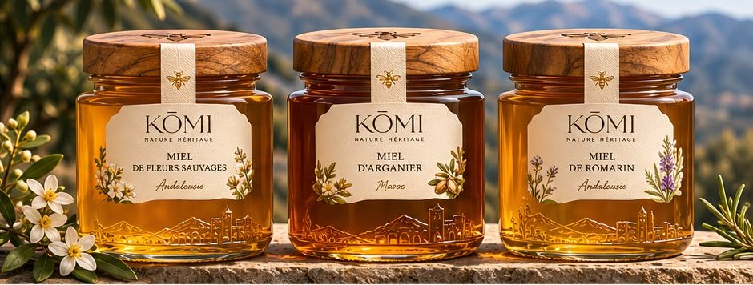
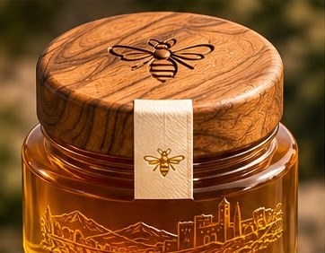
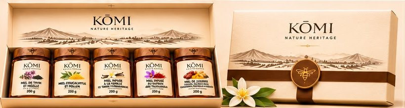
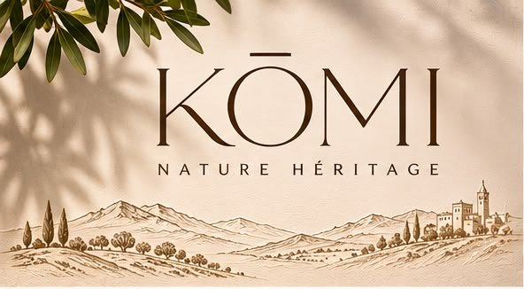

<title>KŌMI Nature Héritage</title>
<meta name="claude:viewport-fit-sides" content="cover">
<meta name="description" content="KŌMI Nature Héritage — miels d'exception d'Andalousie et du Maroc. Collection Créations : thym et nigelle, eucalyptus et pollen, vanille, safran de Taliouine, jujubier.">
<link rel="preconnect" href="https://fonts.googleapis.com">
<link rel="stylesheet" href="https://fonts.googleapis.com/css2?family=Cormorant:ital,wght@0,300;0,400;0,500;1,300;1,400&family=Jost:wght@300;400;500&display=swap">
<style>
/* Layout : deux scènes épinglées au scroll (du rucher au pot, puis les 5 créations), puis une boutique calme sur papier crème. */
:root{
  --paper:#f3eadb;      /* papier d'étiquette */
  --paper-2:#e9dcc6;
  --ink:#3a2618;        /* brun noyer, couleur du logo */
  --ink-soft:#6f5643;
  --amber:#c98a2b;      /* miel dans la lumière */
  --amber-deep:#7a4512;
  --gold:#b08a4a;       /* bandeau CRÉATION */
  --night:#1c120b;
  --display:"Cormorant","Cormorant Garamond",Garamond,"Times New Roman",serif;
  --body:"Jost","Futura","Avenir Next",system-ui,sans-serif;
  color-scheme:light;
}
*{box-sizing:border-box}
html{scroll-behavior:smooth}
body{background:var(--paper);color:var(--ink);font-family:var(--body);font-weight:300;font-size:17px;line-height:1.6;-webkit-font-smoothing:antialiased;overflow-x:hidden}
img{max-width:100%;display:block}
a{color:inherit}
:focus-visible{outline:2px solid var(--amber);outline-offset:3px}
.wrap{padding-left:max(20px,env(safe-area-inset-left,0px));padding-right:max(20px,env(safe-area-inset-right,0px));max-width:1240px;margin:0 auto}
.caps{font-family:var(--body);font-weight:400;font-size:.72rem;letter-spacing:.32em;text-transform:uppercase}
h1,h2,h3{font-family:var(--display);font-weight:300;line-height:1.02;margin:0;text-wrap:balance}

/* ---------- barre ---------- */
.bar{position:fixed;inset:0 0 auto;z-index:20;padding-top:env(safe-area-inset-top,0px)}
.bar .wrap{display:flex;align-items:center;justify-content:space-between;padding-block:18px;max-width:none}
.logo{font-family:var(--display);font-size:1.6rem;letter-spacing:.14em;text-decoration:none;color:var(--paper);transition:color .4s}
.bar nav{display:flex;gap:28px}
.bar nav a{text-decoration:none;color:var(--paper);opacity:.85;transition:color .4s}
.bar.light .logo,.bar.light nav a{color:var(--ink)}
.bar.light{background:color-mix(in srgb,var(--paper) 86%,transparent);backdrop-filter:blur(10px)}
@media (max-width:640px){.bar nav a:not(.cta-mini){display:none}}

/* ---------- scène 1 : du rucher au pot ---------- */
#origine{height:420vh;position:relative;background:var(--night)}
.stage{position:sticky;top:0;height:100vh;height:100svh;overflow:hidden}
.layer{position:absolute;inset:0;will-change:transform,opacity}
.layer img{width:100%;height:100%;object-fit:cover}
#seq{position:absolute;inset:0;width:100%;height:100%;display:none}
.grain{position:absolute;inset:0;pointer-events:none;opacity:.18;mix-blend-mode:overlay;background-image:url("data:image/svg+xml,%3Csvg xmlns='http://www.w3.org/2000/svg' width='160' height='160'%3E%3Cfilter id='n'%3E%3CfeTurbulence baseFrequency='.9' numOctaves='2'/%3E%3C/filter%3E%3Crect width='100%25' height='100%25' filter='url(%23n)'/%3E%3C/svg%3E")}
.veil{position:absolute;inset:0;background:radial-gradient(ellipse 70% 55% at 50% 50%,rgba(28,18,11,.62),rgba(28,18,11,.38) 70%),linear-gradient(180deg,rgba(28,18,11,.5),transparent 30%,transparent 70%,rgba(28,18,11,.6))}
#honey{position:absolute;inset:0;width:100%;height:100%;pointer-events:none}
.copy{position:absolute;inset:0;display:grid;place-items:center;text-align:center;color:var(--paper);pointer-events:none;padding-left:max(20px,env(safe-area-inset-left,0px));padding-right:max(20px,env(safe-area-inset-right,0px))}
#origine.video .copy{place-items:start center;padding-top:calc(13vh + env(safe-area-inset-top,0px))}
#origine.video .beat p:not(.caps){display:none}
#origine.video .veil{background:linear-gradient(180deg,rgba(28,18,11,.62),rgba(28,18,11,.15) 42%,transparent 60%,rgba(28,18,11,.35))}
.copy>div{max-width:760px;text-shadow:0 2px 24px rgba(28,18,11,.5);will-change:opacity,transform}
.hero-title{font-size:clamp(4.4rem,16vw,13rem);letter-spacing:.12em;margin-right:-.12em}
.hero-sub{margin-top:14px}
.beat h2{font-size:clamp(2.2rem,5.6vw,4.4rem);font-style:italic}
.beat p{margin:18px auto 0;max-width:460px;font-size:1.02rem;opacity:.9}
.scroll-hint{position:absolute;left:50%;bottom:calc(28px + env(safe-area-inset-bottom,0px));transform:translateX(-50%);color:var(--paper);display:flex;flex-direction:column;align-items:center;gap:10px}
.scroll-hint i{width:1px;height:44px;background:linear-gradient(var(--paper),transparent);animation:drip 2.2s ease-in-out infinite}
@keyframes drip{0%{transform:scaleY(0);transform-origin:top}50%{transform:scaleY(1);transform-origin:top}51%{transform-origin:bottom}100%{transform:scaleY(0);transform-origin:bottom}}

/* ---------- scène 2 : les cinq créations ---------- */
#creations{height:600vh;position:relative}
#creations .stage{background:var(--tint,#2b1b10);transition:background-color .9s ease}
#fx{position:absolute;inset:0;width:100%;height:100%;pointer-events:none}
.steps{position:absolute;inset:0;pointer-events:none;overflow:hidden;z-index:2;-webkit-mask-image:linear-gradient(transparent,#000 16%,#000 84%,transparent);mask-image:linear-gradient(transparent,#000 16%,#000 84%,transparent)}
.track{position:absolute;inset:0 0 auto 0;will-change:transform}
.step{position:absolute;width:min(380px,60%);color:var(--paper);text-shadow:0 2px 20px rgba(28,18,11,.7),0 0 2px rgba(28,18,11,.4)}
.step.l{left:max(22px,7vw,env(safe-area-inset-left,0px))}
.step.r{right:max(34px,8vw,env(safe-area-inset-right,0px));text-align:right}
.step .n{display:block;font-family:var(--display);font-size:clamp(2.6rem,5vw,4.4rem);line-height:1;opacity:.55;font-variant-numeric:tabular-nums}
.step h3{font-size:clamp(1.7rem,3.4vw,3rem);font-style:italic;margin:6px 0 10px}
.step p{margin:0;font-size:.98rem;opacity:.9}
.rail{position:absolute;right:max(12px,2.2vw,env(safe-area-inset-right,0px));top:30%;height:40%;width:2px;background:rgba(243,234,219,.22);z-index:3;border-radius:2px}
.rail i{position:absolute;inset:0 0 auto 0;height:calc(var(--p,0)*100%);background:var(--paper);border-radius:2px}
.rail b{position:absolute;left:50%;width:7px;height:7px;margin:-3.5px 0 0 -3.5px;border-radius:50%;background:var(--paper);opacity:.35;transition:opacity .3s,transform .3s}
.rail b.on{opacity:1;transform:scale(1.4)}
@media (max-width:640px){.step{width:68%;padding:14px 16px;border-radius:14px;background:rgba(28,18,11,.38);-webkit-backdrop-filter:blur(10px);backdrop-filter:blur(10px)}.step .n{font-size:2.2rem}.step h3{font-size:1.5rem}.step p{font-size:.86rem}.step.l{left:14px}.step.r{right:30px}}
#bees{position:absolute;inset:0;width:100%;height:100%;pointer-events:none;z-index:4}
.hero-title span{display:inline-block;will-change:transform,opacity,filter}
.c-grid{position:absolute;inset:0;display:grid;grid-template-columns:1fr minmax(260px,34vw) 1fr;align-items:center;gap:3vw;color:var(--paper);padding-left:max(20px,env(safe-area-inset-left,0px));padding-right:max(20px,env(safe-area-inset-right,0px))}
.jar-box{position:relative;aspect-ratio:196/354;max-width:100%;max-height:78vh;margin:auto;width:100%;perspective:1400px;z-index:1}
.jar{position:absolute;inset:0;will-change:transform,opacity,filter;transform-origin:50% 60%}
.jar::after{content:"";position:absolute;left:12%;right:12%;bottom:-3%;height:6%;border-radius:50%;background:radial-gradient(closest-side,rgba(0,0,0,.45),transparent);filter:blur(4px)}
.jar img{width:100%;height:100%;object-fit:cover;-webkit-mask-image:radial-gradient(ellipse 54% 52% at 50% 50%,#000 78%,transparent 100%);mask-image:radial-gradient(ellipse 54% 52% at 50% 50%,#000 78%,transparent 100%)}
.c-text{position:relative;min-height:16em;min-width:0;z-index:3;text-shadow:0 2px 18px rgba(0,0,0,.45)}
.c-side{position:relative;z-index:3}
.c-text article{position:absolute;left:0;right:0;top:50%;transform:translateY(-40%);opacity:0;transition:opacity .6s ease,transform .8s ease}
.c-text article.on{opacity:1;transform:translateY(-50%)}
.c-text h3{font-size:clamp(2.2rem,4.2vw,3.8rem);margin:14px 0 18px}
.c-text h3 em{font-weight:300}
.c-text p{margin:0;max-width:30ch;opacity:.86}
.c-side{text-align:right;justify-self:end;display:flex;flex-direction:column;gap:22px;align-items:flex-end}
.counter{font-family:var(--display);font-size:clamp(3rem,6vw,5.5rem);line-height:1;font-variant-numeric:tabular-nums}
.counter small{font-size:.38em;opacity:.6}
.dots{display:flex;gap:8px}
.dots b{width:26px;height:2px;background:var(--paper);opacity:.25;transition:opacity .4s}
.dots b.on{opacity:1}
.meta{display:flex;flex-direction:column;gap:6px;opacity:.85}
@media (max-width:820px){
  .c-grid{grid-template-columns:1fr;grid-template-rows:auto 1fr auto;padding-top:calc(76px + env(safe-area-inset-top,0px));padding-bottom:calc(24px + env(safe-area-inset-bottom,0px));gap:8px}
  .c-text{order:3;min-height:9.5em;text-align:center}
  .c-text p{margin:0 auto}
  .c-text h3{margin:6px 0 10px;font-size:2rem}
  .jar-box{max-height:46vh;width:auto;height:46vh}
  .c-side{order:1;justify-self:center;align-items:center;flex-direction:row;gap:18px}
  .c-side .meta{display:none}
  .counter{font-size:2.4rem}
}

/* ---------- boutique ---------- */
section.shop{padding-block:120px 80px}
.head{display:grid;grid-template-columns:1fr 1fr;gap:40px;align-items:end;margin-bottom:56px}
.head h2{font-size:clamp(2.6rem,6vw,5rem)}
.head h2 em{color:var(--amber-deep)}
.head p{margin:0;max-width:44ch;color:var(--ink-soft)}
.cards{display:grid;grid-template-columns:repeat(5,minmax(0,1fr));gap:18px}
.card{display:flex;flex-direction:column;gap:14px;min-width:0}
.card .ph{background:var(--paper-2);border-radius:2px;overflow:hidden;aspect-ratio:3/4}
.card .ph img{width:100%;height:100%;object-fit:cover;transition:transform 1.2s cubic-bezier(.2,.7,.2,1)}
.card:hover .ph img{transform:scale(1.05)}
.card h3{font-size:1.5rem;line-height:1.1}
.card .ing{font-size:.88rem;color:var(--ink-soft);margin:0}
.card .row{margin-top:auto;display:flex;justify-content:space-between;align-items:center;gap:8px;border-top:1px solid color-mix(in srgb,var(--ink) 18%,transparent);padding-top:12px}
.card .row span{font-variant-numeric:tabular-nums}
.btn{display:inline-flex;align-items:center;gap:10px;background:var(--ink);color:var(--paper);text-decoration:none;padding:14px 22px;border-radius:999px;font-weight:400;font-size:.92rem;letter-spacing:.04em;transition:background .3s}
.btn:hover{background:var(--amber-deep)}
.btn.ghost{background:transparent;color:var(--ink);border:1px solid var(--ink)}
.btn.ghost:hover{background:var(--ink);color:var(--paper)}
.link{font-size:.85rem;text-decoration:none;border-bottom:1px solid currentColor;padding-bottom:1px;white-space:nowrap}
@media (max-width:1000px){.cards{grid-template-columns:repeat(3,minmax(0,1fr))}}
@media (max-width:680px){.head{grid-template-columns:1fr}.cards{grid-template-columns:repeat(2,minmax(0,1fr))}}

/* ---------- coffret ---------- */
.coffret{background:var(--ink);color:var(--paper)}
.coffret .wrap{display:grid;grid-template-columns:1.25fr 1fr;gap:56px;align-items:center;padding-block:110px}
.coffret img{border-radius:2px;width:100%}
.coffret h2{font-size:clamp(2.4rem,5vw,4.2rem);margin:16px 0 20px}
.coffret p{max-width:42ch;opacity:.82;margin:0 0 30px}
.coffret .btn{background:var(--paper);color:var(--ink)}
.coffret .btn:hover{background:var(--amber);color:var(--night)}
.spec{display:flex;gap:28px;margin-bottom:30px;flex-wrap:wrap}
.spec div{display:flex;flex-direction:column}
.spec b{font-family:var(--display);font-weight:400;font-size:2rem;line-height:1;font-variant-numeric:tabular-nums}
@media (max-width:820px){.coffret .wrap{grid-template-columns:1fr;gap:36px;padding-block:80px}}

/* ---------- héritage ---------- */
.heritage .wrap{display:grid;grid-template-columns:1fr 1fr;gap:64px;align-items:center;padding-block:120px}
.heritage .pic{position:relative}
.heritage .pic img{width:100%;border-radius:2px}
.heritage h2{font-size:clamp(2.4rem,5vw,4.2rem);margin:16px 0 22px}
.heritage p{color:var(--ink-soft);max-width:46ch;margin:0 0 16px}
.terroirs{display:grid;grid-template-columns:1fr 1fr;gap:24px;margin-top:34px;border-top:1px solid color-mix(in srgb,var(--ink) 18%,transparent);padding-top:22px}
.terroirs h4{margin:0 0 4px;font-family:var(--display);font-weight:400;font-size:1.5rem}
.terroirs p{font-size:.9rem;margin:0}
@media (max-width:820px){.heritage .wrap{grid-template-columns:1fr;gap:36px;padding-block:80px}}

/* ---------- engagements ---------- */
.promise{border-top:1px solid color-mix(in srgb,var(--ink) 15%,transparent);border-bottom:1px solid color-mix(in srgb,var(--ink) 15%,transparent)}
.promise ul{list-style:none;margin:0 auto;padding-block:38px;display:flex;flex-wrap:wrap;justify-content:space-between;gap:20px 36px}
.promise li{display:flex;align-items:center;gap:12px;font-size:.95rem}
.promise svg{width:30px;height:30px;stroke:var(--gold);fill:none;stroke-width:1.2;flex:none}

/* ---------- pied ---------- */
footer .wrap{padding-block:90px calc(40px + env(safe-area-inset-bottom,0px));display:grid;grid-template-columns:1.4fr 1fr 1fr;gap:40px}
footer .big{font-family:var(--display);font-size:clamp(3rem,8vw,6rem);letter-spacing:.12em;line-height:1}
footer h5{margin:0 0 12px}
footer p{margin:0;color:var(--ink-soft);font-size:.95rem}
footer .fine{grid-column:1/-1;display:flex;justify-content:space-between;flex-wrap:wrap;gap:10px;font-size:.8rem;color:var(--ink-soft);border-top:1px solid color-mix(in srgb,var(--ink) 15%,transparent);padding-top:22px}
@media (max-width:760px){footer .wrap{grid-template-columns:1fr}}

@media (prefers-reduced-motion:reduce){
  html{scroll-behavior:auto}
  .scroll-hint i{animation:none}
  .c-text article{transition:none}
}
</style>

<header class="bar" id="bar">
  <div class="wrap">
    <a class="logo" href="#top" aria-label="KŌMI, retour en haut">KŌMI</a>
    <nav class="caps">
      <a href="#creations">Créations</a>
      <a href="#heritage">Héritage</a>
      <a href="#boutique" class="cta-mini">Boutique</a>
    </nav>
  </div>
</header>

<main id="top">

<!-- SCÈNE 1 — du rucher au pot. Remplacée par la séquence vidéo dès qu'elle existe (voir FRAMES dans le script). -->
<section id="origine" aria-label="Du rucher au pot">
  <div class="stage">
    <canvas id="seq" aria-hidden="true"></canvas>
    <div class="layer" id="L1"></div>
    <div class="layer" id="L2" style="opacity:0"></div>
    <div class="veil"></div>
    <canvas id="honey" aria-hidden="true"></canvas>
    <div class="grain"></div>

    <div class="copy"><div id="t0">
      <h1 class="hero-title" aria-label="KŌMI"><span>K</span><span>Ō</span><span>M</span><span>I</span></h1>
      <p class="caps hero-sub">Nature héritage · Andalousie &amp; Maroc</p>
    </div></div>
    <div class="copy"><div class="beat" id="t1" style="opacity:0">
      <p class="caps">Le rucher</p>
      <h2>Des collines fleuries,<br>récoltées à la main</h2>
      <p>Thym sauvage, romarin, fleurs d'arganier. Nos abeilles butinent des terroirs que l'on connaît par leur nom.</p>
    </div></div>
    <div class="copy"><div class="beat" id="t2" style="opacity:0">
      <p class="caps">Le pot</p>
      <h2>Un couvercle de bois,<br>une abeille gravée</h2>
      <p>Miel non pasteurisé, sans additif, mis en pot tel qu'il sort de la ruche.</p>
    </div></div>
    <div class="copy"><div class="beat" id="t3" style="opacity:0;color:var(--night);text-shadow:none">
      <p class="caps">Collection Créations</p>
      <h2>Cinq miels,<br>cinq rencontres</h2>
    </div></div>

    <div class="steps" aria-label="Du rucher au pot"><div class="track" id="track">
      <article class="step l" data-at=".14"><span class="n">01</span><p class="caps">Le rucher</p><h3>Les collines d'Andalousie</h3><p>Nos ruches sont posées au milieu du thym sauvage et des oliviers.</p></article>
      <article class="step r" data-at=".36"><span class="n">02</span><p class="caps">La récolte</p><h3>Cadre par cadre, à la main</h3><p>On ne prélève que les rayons operculés, quand le miel est mûr.</p></article>
      <article class="step l" data-at=".55"><span class="n">03</span><p class="caps">La coulée</p><h3>Un miel brut</h3><p>Non pasteurisé, sans additif. Il coule tel qu'il sort de la ruche.</p></article>
      <article class="step r" data-at=".72"><span class="n">04</span><p class="caps">La mise en pot</p><h3>Bois gravé, abeille dorée</h3><p>Chaque pot est fermé d'un couvercle en bois naturel gravé.</p></article>
    </div></div>
    <div class="rail" id="rail" aria-hidden="true"><i></i><b style="top:0%"></b><b style="top:33%"></b><b style="top:66%"></b><b style="top:100%"></b></div>
    <canvas id="bees" aria-hidden="true"></canvas>
    <div class="scroll-hint caps" id="hint">Défiler<i></i></div>
  </div>
</section>

<!-- SCÈNE 2 — les cinq créations -->
<section id="creations" aria-label="Collection Créations">
  <div class="stage">
    <canvas id="fx" aria-hidden="true"></canvas>
    <div class="c-grid">
      <div class="c-text" id="ctext"></div>
      <div class="jar-box" id="jars"></div>
      <div class="c-side">
        <div class="counter"><span id="cnum">01</span> <small>/ 05</small></div>
        <div class="dots" id="dots"></div>
        <div class="meta caps"><span>250 g</span><span id="corig">Origine Andalousie</span></div>
      </div>
    </div>
  </div>
</section>

<!-- BOUTIQUE -->
<section class="shop" id="boutique">
  <div class="wrap">
    <div class="head">
      <div><p class="caps">La boutique</p><h2>Collection <em>Créations</em></h2></div>
      <p>Chaque création associe un miel d'Andalousie à un ingrédient choisi pour lui. Pots de 250 g, couvercle en bois naturel, étiquette en papier texturé.</p>
    </div>
    <div class="cards" id="cards"></div>
  </div>
</section>

<!-- COFFRET -->
<section class="coffret" id="coffret">
  <div class="wrap">
    
    <div>
      <p class="caps">À offrir</p>
      <h2>Le coffret découverte</h2>
      <p>Les cinq créations réunies dans un coffret en papier texturé, fermé d'un ruban et d'un cachet à l'abeille. Le cadeau des tables qui aiment bien recevoir.</p>
      <div class="spec">
        <div><b>5</b><span class="caps">créations</span></div>
        <div><b>200 g</b><span class="caps">par pot</span></div>
        <div><b>1 kg</b><span class="caps">au total</span></div>
      </div>
      <a class="btn" data-order="Coffret découverte (5 × 200 g)" href="#">Commander le coffret</a>
    </div>
  </div>
</section>

<!-- HÉRITAGE -->
<section class="heritage" id="heritage">
  <div class="wrap">
    <div class="pic"></div>
    <div>
      <p class="caps">Notre héritage</p>
      <h2>Entre l'Andalousie et le Maroc</h2>
      <p>KŌMI est né entre deux rives. D'un côté, les sierras andalouses et leurs fleurs sauvages. De l'autre, l'arganeraie marocaine et le safran de Taliouine.</p>
      <p>Deux terroirs riches d'une biodiversité rare, où les abeilles gardent un savoir-faire que l'on transmet sans le presser.</p>
      <div class="terroirs">
        <div><h4>Andalousie</h4><p>Thym, romarin, eucalyptus, fleurs sauvages.</p></div>
        <div><h4>Maroc</h4><p>Arganier, safran de Taliouine, amlou.</p></div>
      </div>
    </div>
  </div>
</section>

<section class="promise" aria-label="Nos engagements">
  <ul class="wrap">
    <li><svg viewBox="0 0 32 32"><path d="M7 25c0-10 7-17 18-18-1 11-8 18-18 18Zm0 0 9-9"/></svg>100 % naturel</li>
    <li><svg viewBox="0 0 32 32"><path d="M12 5h8M14 5v8l-7 12a2 2 0 0 0 2 3h14a2 2 0 0 0 2-3l-7-12V5"/><path d="M6 26 26 6"/></svg>Sans additifs</li>
    <li><svg viewBox="0 0 32 32"><path d="m16 4 10 6v12l-10 6-10-6V10Z"/><path d="m16 11 5 3v5l-5 3-5-3v-5Z"/></svg>Non pasteurisé</li>
    <li><svg viewBox="0 0 32 32"><path d="M3 25 12 11l5 7 4-5 8 12Z"/></svg>Origine Andalousie</li>
    <li><svg viewBox="0 0 32 32"><path d="M9 21a8 8 0 0 1 11-12m3 2a8 8 0 0 1-11 12"/><path d="m20 5 0 4-4 0M12 27v-4h4"/></svg>Packaging recyclable</li>
  </ul>
</section>

</main>

<footer>
  <div class="wrap">
    <div><div class="big">KŌMI</div><p class="caps" style="margin-top:10px">Nature héritage</p></div>
    <div><h5 class="caps">Commander</h5><p>Par WhatsApp, réponse sous 24 h.<br><span id="phone"></span></p></div>
    <div><h5 class="caps">Bientôt</h5><p>Miels classiques, amlou traditionnel, snacks au miel et fruits secs.</p></div>
    <div class="fine"><span>© 2026 KŌMI Nature Héritage</span><span>Site réalisé par Goual</span></div>
  </div>
</footer>

<script>
/* ================= RÉGLAGES DE LA MARQUE =================
   Pour réutiliser ce site pour une autre marque, tout se change ici. */
const CONFIG = {
  whatsapp: "", // ex. "971501234567" — vide = bouton désactivé en attendant le numéro
  // Séquence vidéo de la scène 1 (du rucher au pot). count:0 = version provisoire avec photos.
  // Séquences vidéo de la scène 1 (du rucher au pot). count:0 = version provisoire avec photos.
  FRAMES: {
    mobile:  { count: 151, path: i => `frames/mobile/${String(i+1).padStart(4,"0")}.webp` },
    desktop: { count: 0,   path: i => `frames/desktop/${String(i+1).padStart(4,"0")}.webp` },
  },
};
const FLAVORS = [
  { id:"thym", name:"Miel de thym <em>et nigelle</em>", short:"Thym & nigelle", ing:"Miel de thym sauvage, graines de nigelle.",
    text:"Un miel de garrigue, herbacé et puissant, relevé du léger poivré des graines de nigelle.",
    origin:"Andalousie", tint:"#3a2a3c", fx:["blossom","seed"] },
  { id:"eucalyptus", name:"Miel d'eucalyptus <em>et pollen</em>", short:"Eucalyptus & pollen", ing:"Miel d'eucalyptus, pollen de fleurs.",
    text:"Frais et balsamique, avec la mâche ronde et légèrement sucrée des grains de pollen.",
    origin:"Andalousie", tint:"#2c3a2e", fx:["leaf","pollen"] },
  { id:"vanille", name:"Miel infusé <em>à la vanille</em>", short:"Vanille", ing:"Miel de fleurs, gousses de vanille de Tahiti et Madagascar.",
    text:"Infusé lentement avec des gousses entières. Doux, crémeux, presque pâtissier.",
    origin:"Andalousie", tint:"#3b2c1d", fx:["pod","flower"] },
  { id:"safran", name:"Miel infusé <em>au safran</em>", short:"Safran de Taliouine", ing:"Miel de fleurs, pistils de safran de Taliouine.",
    text:"Les pistils rouges du safran de Taliouine colorent le miel d'or profond et lui donnent une note florale rare.",
    origin:"Andalousie · safran du Maroc", tint:"#4a1d1a", fx:["thread","petal"] },
  { id:"jujubier", name:"Miel de <em>jujubier</em>", short:"Jujubier & épices", ing:"Miel de jujubier, curcuma, poivre noir, gingembre, propolis, pollen.",
    text:"Notre création la plus intense : un miel de jujubier, chaud et épicé, avec curcuma, gingembre et poivre noir.",
    origin:"Andalousie", tint:"#45241a", fx:["jujube","chunk","seed"] },
];

/* ================= OUTILS ================= */
const $ = s => document.querySelector(s);
const clamp = (v,a=0,b=1) => Math.min(b,Math.max(a,v));
const seg = (p,a,b) => clamp((p-a)/(b-a));          // progression locale 0→1 entre a et b
const ease = t => t<.5 ? 4*t*t*t : 1-Math.pow(-2*t+2,3)/2;
const reduce = matchMedia("(prefers-reduced-motion: reduce)").matches;
const progress = el => { const r = el.getBoundingClientRect(); return clamp(-r.top / (r.height - innerHeight)); };

/* ================= COMMANDE WHATSAPP ================= */
function waLink(what){
  if(!CONFIG.whatsapp) return null;
  return `https://wa.me/${CONFIG.whatsapp}?text=${encodeURIComponent("Bonjour KŌMI, je souhaite commander : " + what)}`;
}
function wire(a){
  const url = waLink(a.dataset.order);
  if(url){ a.href = url; a.target = "_blank"; a.rel = "noopener"; }
  else { a.href = "#boutique"; a.title = "Numéro WhatsApp à ajouter"; }
}
$("#phone").textContent = CONFIG.whatsapp ? "+" + CONFIG.whatsapp : "Numéro WhatsApp à venir";

/* ================= CONSTRUCTION ================= */
const jars = $("#jars"), ctext = $("#ctext"), dots = $("#dots"), cards = $("#cards");
FLAVORS.forEach((f,i) => {
  jars.insertAdjacentHTML("beforeend", `<div class="jar"></div>`);
  ctext.insertAdjacentHTML("beforeend", `<article class="${i?"":"on"}"><p class="caps">Création ${String(i+1).padStart(2,"0")}</p><h3>${f.name}</h3><p>${f.text}</p></article>`);
  dots.insertAdjacentHTML("beforeend", `<b class="${i?"":"on"}"></b>`);
  cards.insertAdjacentHTML("beforeend", `<div class="card">
    <div class="ph"></div>
    <h3>${f.name.replace(/<\/?em>/g,"")}</h3><p class="ing">${f.ing}</p>
    <div class="row"><span>250 g</span><a class="link" data-order="${f.short} (250 g)" href="#">Commander</a></div></div>`);
});
document.querySelectorAll("[data-order]").forEach(wire);

/* ================= SCÈNE 1 ================= */
const origine = $("#origine"), L1 = $("#L1"), L2 = $("#L2"), hint = $("#hint");
const T = [$("#t0"),$("#t1"),$("#t2"),$("#t3")];
const track = $("#track"), rail = $("#rail"), railDots = [...rail.querySelectorAll("b")];
function placeSteps(){ const D = innerHeight*4.2; track.querySelectorAll(".step").forEach(el=>{ el.style.top = (innerHeight*.5 + parseFloat(el.dataset.at)*D - el.offsetHeight/2) + "px"; }); }
const titleLetters = [...document.querySelectorAll(".hero-title span")];

/* ================= ABEILLES ================= */
const beeCv = $("#bees"), bctx = beeCv.getContext("2d");
const canBlur = "filter" in bctx;
let bees = [], beeScroll = scrollY;
function makeBees(){
  const w = beeCv.width, h = beeCv.height, d = Math.min(devicePixelRatio||1,2), small = innerWidth < 700;
  const n = small ? 9 : 14, near = small ? 2 : 3;
  bees = [];
  for(let i=0;i<n;i++){
    const isNear = i < near;
    bees.push({ x:Math.random()*w, y:Math.random()*h, h:Math.random()*Math.PI*2, ph:Math.random()*99,
      s:(isNear ? 22+Math.random()*12 : 6+Math.random()*5)*d*(small?.85:1), depth:isNear?1.6:.4+Math.random()*.5,
      v:(isNear?1.6:.9)*d, blur:isNear?4*d:0.6*d });
  }
}
function drawBee(c,b,t){
  const L = b.s; c.save(); c.translate(b.x,b.y); c.rotate(b.h);
  if(canBlur && b.blur) c.filter = `blur(${b.blur}px)`;
  // ombre douce
  c.fillStyle = "rgba(28,18,11,.18)"; c.beginPath(); c.ellipse(L*.05,L*.18,L*.42,L*.14,0,0,7); c.fill();
  // corps rayé
  c.save(); c.beginPath(); c.ellipse(0,0,L*.46,L*.21,0,0,7);
  const g = c.createLinearGradient(0,-L*.2,0,L*.2); g.addColorStop(0,"#f3c25a"); g.addColorStop(1,"#b97a1c");
  c.fillStyle = g; c.fill(); c.clip();
  c.fillStyle = "#2a1a0e"; [-.3,-.1,.1].forEach(x=>c.fillRect(x*L,-L*.3,L*.09,L*.6));
  c.restore();
  c.fillStyle = "#2a1a0e"; c.beginPath(); c.arc(L*.46,0,L*.15,0,7); c.fill();
  c.beginPath(); c.moveTo(-L*.46,0); c.lineTo(-L*.58,0); c.lineWidth = L*.04; c.strokeStyle="#2a1a0e"; c.stroke();
  // ailes qui battent
  const flap = .25 + .75*Math.abs(Math.sin(t*.055 + b.ph));
  c.fillStyle = "rgba(255,250,236,.55)"; c.strokeStyle = "rgba(255,255,255,.5)"; c.lineWidth = Math.max(1,L*.015);
  [-1,1].forEach(sd=>{ c.save(); c.translate(L*.02,sd*L*.08); c.rotate(sd*-.35); c.scale(1,flap);
    c.beginPath(); c.ellipse(-L*.08,sd*L*.3,L*.2,L*.32,sd*.3,0,7); c.fill(); c.stroke(); c.restore(); });
  c.restore();
}
function drawBees(t, p){
  const w = beeCv.width, h = beeCv.height; bctx.clearRect(0,0,w,h);
  const a = 1 - seg(p,.84,.92); if(a<=0 || !bees.length) return;
  const dy = (scrollY - beeScroll) * Math.min(devicePixelRatio||1,2); beeScroll = scrollY;
  bctx.globalAlpha = a;
  bees.forEach(b=>{
    if(!reduce){
      b.h += (Math.sin(t*.0013 + b.ph)*.04) + (Math.random()-.5)*.12;
      const mx = w*.08, my = h*.08;                  // reste dans l'écran
      if(b.x < mx) b.h += .08; if(b.x > w-mx) b.h -= .08;
      if(b.y < my) b.h += b.h>-Math.PI/2 ? .08 : -.08; if(b.y > h-my) b.h -= .06;
      const sp = b.v * (.45 + .55*Math.abs(Math.sin(t*.0009 + b.ph)));   // vol puis vol stationnaire
      b.x += Math.cos(b.h)*sp; b.y += Math.sin(b.h)*sp + Math.sin(t*.006 + b.ph)*.6 - dy*b.depth*.35;
      if(b.y < -80) b.y = h+60; if(b.y > h+80) b.y = -60;
    }
    drawBee(bctx,b,t);
  });
  bctx.globalAlpha = 1;
}
const honey = $("#honey"), hctx = honey.getContext("2d");
const seq = $("#seq"), sctx = seq.getContext("2d");
const frames = [];
const SEQ = matchMedia("(max-aspect-ratio: 1/1)").matches ? CONFIG.FRAMES.mobile : CONFIG.FRAMES.desktop;
if(SEQ.count){
  origine.classList.add("video");
  seq.style.display = "block"; L1.style.display = L2.style.display = "none";
  // chargement progressif : une image sur 8 d'abord, puis le reste, pour que le scroll réponde tout de suite
  const order = []; for(let st of [8,4,2,1]) for(let i=0;i<SEQ.count;i+=st) if(!order.includes(i)) order.push(i);
  for(let i=0;i<SEQ.count;i++) frames.push(null);
  order.forEach(i=>{ const im = new Image(); im.decoding = "async"; im.src = SEQ.path(i); frames[i] = im; });
}
function fit(c){ const d = Math.min(devicePixelRatio||1,2); c.width = c.clientWidth*d; c.height = c.clientHeight*d; return d; }
function drawFrame(p){
  let i = Math.round(p*(frames.length-1)), im = null;
  for(let d=0; d<frames.length; d++){            // image la plus proche déjà chargée
    const a = frames[i-d], b = frames[i+d];
    if(a && a.complete && a.naturalWidth){ im = a; break; }
    if(b && b.complete && b.naturalWidth){ im = b; break; }
  }
  if(!im || im === drawFrame.last) return; drawFrame.last = im;
  const cw = seq.width, ch = seq.height, s = Math.max(cw/im.width, ch/im.height);
  sctx.drawImage(im,(cw-im.width*s)/2,(ch-im.height*s)/2,im.width*s,im.height*s);
}
function show(el,o,y=0){ el.style.opacity = o; el.style.transform = `translateY(${y}px)`; el.style.filter = o>.99||o<.01 ? "none" : `blur(${(1-o)*10}px)`; }

// La coulée de miel qui remplit l'écran à la fin de la scène 1
function drawHoney(t, time){
  const w = honey.width, h = honey.height; hctx.clearRect(0,0,w,h);
  if(t<=0) return;
  const level = h*(1-ease(t)*1.08);                 // le niveau monte
  const g = hctx.createLinearGradient(0,level-80,0,h);
  g.addColorStop(0,"#e8b45a"); g.addColorStop(.35,"#c98a2b"); g.addColorStop(1,"#8a4f14");
  hctx.fillStyle = g; hctx.beginPath(); hctx.moveTo(0,h);
  for(let x=0;x<=w;x+=w/48){
    const y = level + Math.sin(x/w*7 + time/900)*14*(1-t) + Math.sin(x/w*17 - time/600)*6*(1-t);
    hctx.lineTo(x,y);
  }
  hctx.lineTo(w,h); hctx.closePath(); hctx.fill();
  // filet qui tombe du haut avant que le niveau ne monte
  if(t<.6){
    const th = (1-t/.6);
    hctx.fillStyle = "#d99a3a";
    hctx.beginPath(); hctx.ellipse(w/2, level*.5, 7*th+2, level*.5, 0, 0, Math.PI*2); hctx.fill();
  }
  // reflet
  hctx.fillStyle = "rgba(255,236,190,.18)"; hctx.fillRect(0,level+18,w,3);
}

function scene1(time){
  const p = progress(origine);
  const vid = frames.length > 0;
  if(vid) drawFrame(seg(p,0,.82));
  else {
    const z1 = 1 + ease(seg(p,0,.42))*.3;
    L1.style.transform = `scale(${z1}) translateY(${seg(p,0,.42)*4}%)`;
    L1.style.opacity = 1 - seg(p,.34,.46);
    const z2 = 1.25 - ease(seg(p,.34,.78))*.25 + seg(p,.62,.8)*.35;
    L2.style.opacity = seg(p,.34,.46);
    L2.style.transform = `scale(${z2})`;
  }
  const out = (a,b)=> 1-seg(p,a,b), inn=(a,b)=>seg(p,a,b);
  // Le rythme des textes suit la vidéo quand elle est là : rucher → coulée → couvercle → les cinq miels
  const K = vid ? [.04,.12, .14,.2,.3,.36, .58,.64,.74,.8, .9,.96] : [.04,.14, .12,.2,.3,.37, .44,.52,.62,.68, .86,.94];
  show(T[0], out(K[0],K[1]), -seg(p,0,K[1])*40);
  T[1].hidden = T[2].hidden = true;
  // les étapes défilent à gauche et à droite, à la vitesse du doigt : on sent qu'on descend
  const D = innerHeight*4.2;
  track.style.transform = `translate3d(0,${-p*D}px,0)`;
  const rp = clamp(p/.82); rail.style.setProperty("--p", rp);
  railDots.forEach((b,i)=>b.classList.toggle("on", rp >= i/3 - .01));
  rail.style.opacity = 1 - seg(p,.82,.88);
  show(T[3], inn(K[10],K[11]), (1-inn(K[10],K[11]))*30);
  hint.style.opacity = 1 - seg(p,0,.05);
  // les lettres de KŌMI s'écartent et s'envolent une à une
  const tl = seg(p,0,.12);
  titleLetters.forEach((el,i)=>{ const k = clamp(tl*1.6 - i*.15); el.style.transform = `translate(${(i-1.5)*k*28}px,${-k*(60+i*30)}px) rotate(${(i-1.5)*k*6}deg)`; el.style.filter = k>0 ? `blur(${k*6}px)` : "none"; });
  if(vid) seq.style.transform = `scale(${1 + ease(seg(p,0,.82))*.08})`;
  drawBees(time, p);
  drawHoney(vid ? seg(p,.84,.98) : seg(p,.66,.9), time);
  return p;
}

/* ================= SCÈNE 2 : les créations + ingrédients ================= */
const creations = $("#creations"), fx = $("#fx"), fctx = fx.getContext("2d");
const jarEls = [...jars.children], textEls = [...ctext.children], dotEls = [...dots.children];
let current = -1, parts = [];

const PAL = {
  blossom:["#b48ac9","#9b6db5","#d3b4e0"], seed:["#1a1410","#2b211a"], leaf:["#6f8f5a","#4d6b44","#8aa877"],
  pollen:["#e6b52e","#d9a21b","#f1c94f"], pod:["#2a1a10","#3b2416"], flower:["#fbf6ec","#f3e8d2"],
  thread:["#c4241c","#a51a14","#d8402a"], petal:["#9a5fc4","#b07ad6"], jujube:["#8c2a1c","#a1361f","#6f1f15"],
  chunk:["#e09a1f","#d4a35a","#f0b73a"]
};
function spawn(kind, w, h, fromTop){
  const d = devicePixelRatio>1?1.6:1;
  return { kind, x:Math.random()*w, y: fromTop ? -40 : Math.random()*h, z: .45+Math.random()*.9,
    r:Math.random()*Math.PI*2, vr:(Math.random()-.5)*.02, vx:(Math.random()-.5)*.25,
    s:(kind==="seed"||kind==="pollen"?4:kind==="thread"?16:kind==="pod"?38:kind==="jujube"?14:kind==="chunk"?10:12)*d*(.7+Math.random()*.6),
    c:PAL[kind][Math.floor(Math.random()*PAL[kind].length)] };
}
function setFlavor(i){
  if(i===current) return; current = i; const f = FLAVORS[i];
  creations.querySelector(".stage").style.setProperty("--tint", f.tint);
  textEls.forEach((e,k)=>e.classList.toggle("on",k===i));
  dotEls.forEach((e,k)=>e.classList.toggle("on",k===i));
  $("#cnum").textContent = String(i+1).padStart(2,"0");
  $("#corig").textContent = "Origine " + f.origin;
  // les ingrédients jaillissent de derrière le pot
  const w = fx.width, h = fx.height, n = innerWidth<700?34:60;
  const jb = jars.getBoundingClientRect(), d = Math.min(devicePixelRatio||1,2);
  const cx = (jb.left + jb.width/2)*d, cy = (jb.top + jb.height*.45)*d;
  parts = parts.slice(-12);
  for(let k=0;k<n;k++){
    const p = spawn(f.fx[k%f.fx.length], w, h, false), ang = Math.random()*Math.PI*2, sp = (4+Math.random()*9)*d;
    p.x = cx + Math.cos(ang)*jb.width*.15*d; p.y = cy + Math.sin(ang)*jb.height*.15*d;
    p.bx = Math.cos(ang)*sp; p.by = Math.sin(ang)*sp - 3*d; p.z = .7+Math.random()*.7; parts.push(p);
  }
}
function drawPart(p){
  const c = fctx; c.save(); c.translate(p.x,p.y); c.rotate(p.r); c.globalAlpha = .55+.45*Math.min(1,p.z); const s = p.s*p.z;
  c.fillStyle = p.c; c.strokeStyle = p.c;
  switch(p.kind){
    case "seed": c.beginPath(); c.ellipse(0,0,s*.9,s*.5,0,0,7); c.fill(); break;
    case "pollen": c.beginPath(); c.arc(0,0,s*.7,0,7); c.fill(); c.fillStyle="rgba(255,255,255,.35)"; c.beginPath(); c.arc(-s*.2,-s*.2,s*.22,0,7); c.fill(); break;
    case "blossom": for(let k=0;k<5;k++){ c.rotate(Math.PI*2/5); c.beginPath(); c.ellipse(0,s*.45,s*.28,s*.45,0,0,7); c.fill(); } c.fillStyle="#f3d27a"; c.beginPath(); c.arc(0,0,s*.18,0,7); c.fill(); break;
    case "flower": for(let k=0;k<5;k++){ c.rotate(Math.PI*2/5); c.beginPath(); c.ellipse(0,s*.6,s*.32,s*.62,0,0,7); c.fill(); } c.fillStyle="#f0c84a"; c.beginPath(); c.arc(0,0,s*.2,0,7); c.fill(); break;
    case "leaf": c.beginPath(); c.ellipse(0,0,s*1.4,s*.45,0,0,7); c.fill(); c.strokeStyle="rgba(255,255,255,.25)"; c.lineWidth=1; c.beginPath(); c.moveTo(-s*1.3,0); c.lineTo(s*1.3,0); c.stroke(); break;
    case "pod": c.lineCap="round"; c.lineWidth=s*.16; c.beginPath(); c.moveTo(-s*.5,0); c.quadraticCurveTo(0,s*.12,s*.5,0); c.stroke(); break;
    case "thread": c.lineCap="round"; c.lineWidth=Math.max(1.4,s*.12); c.beginPath(); c.moveTo(-s*.5,0); c.bezierCurveTo(-s*.15,-s*.25,s*.15,s*.25,s*.5,0); c.stroke(); break;
    case "petal": c.beginPath(); c.ellipse(0,0,s*.38,s*.9,0,0,7); c.fill(); break;
    case "jujube": c.beginPath(); c.ellipse(0,0,s*.75,s*.55,0,0,7); c.fill(); c.fillStyle="rgba(255,220,180,.22)"; c.beginPath(); c.ellipse(-s*.25,-s*.18,s*.22,s*.12,0,0,7); c.fill(); break;
    case "chunk": c.beginPath(); c.moveTo(-s*.6,-s*.4); c.lineTo(s*.55,-s*.5); c.lineTo(s*.6,s*.35); c.lineTo(-s*.45,s*.5); c.closePath(); c.fill(); break;
  }
  c.restore();
}
let lastY = scrollY;
function scene2(){
  const r = creations.getBoundingClientRect();
  if(r.bottom < 0 || r.top > innerHeight) return;
  const p = progress(creations);
  // carrousel : les pots tournent sur un arc, avec un temps d'arrêt sur chacun
  const N = FLAVORS.length, raw = p*(N-1), base = Math.floor(raw), fr = raw-base;
  const q = Math.min(N-1, base + ease(clamp((fr-.25)/.5)));
  setFlavor(Math.round(q));
  const W = jars.clientWidth, small = innerWidth < 820;
  jarEls.forEach((el,k)=>{
    const o = k - q, a = Math.abs(o);
    const x = o * W * (small ? .82 : .78), z = -a * (small ? 260 : 320), ry = -o * 34;
    el.style.transform = `translate3d(${x}px,${a*14}px,${z}px) rotateY(${ry}deg)`;
    el.style.opacity = clamp(1.25 - Math.max(0,a-1)*1.2) * (a<.5 ? 1 : .85);
    el.style.filter = a < .05 ? "none" : `blur(${Math.min(6,a*3.2)}px) brightness(${1 - Math.min(.45,a*.3)})`;
    el.style.zIndex = String(10 - Math.round(a*2));
  });
  const w = fx.width, h = fx.height, push = clamp(Math.abs(scrollY-lastY)/20,0,3);
  fctx.clearRect(0,0,w,h);
  const f = FLAVORS[current];
  if(!reduce && parts.length<(innerWidth<700?22:36) && Math.random()<.08) parts.push(spawn(f.fx[Math.floor(Math.random()*f.fx.length)], w, h, true));
  parts.forEach(q=>{
    if(!reduce){
      if(q.bx !== undefined){ q.x += q.bx; q.y += q.by; q.bx *= .955; q.by = q.by*.955 + .18; q.r += q.vr*4; if(Math.abs(q.bx)<.3 && q.by>0 && q.by<1.4) q.bx = undefined; }
      else { q.y += (1.1+push*2.2)*q.z*(devicePixelRatio>1?1.5:1); q.x += q.vx + Math.sin((q.y+q.x)/140)*.35; q.r += q.vr*(1+push); }
    }
    drawPart(q);
  });
  parts = parts.filter(q=>q.y<h+60);
}

/* ================= BOUCLE ================= */
const bar = $("#bar");
let lastW = 0;
function resize(){ placeSteps(); fit(honey); fit(fx); fit(beeCv); if(innerWidth !== lastW || !bees.length){ lastW = innerWidth; makeBees(); } if(frames.length){ fit(seq); drawFrame.last = null; } }
addEventListener("resize", resize); resize();
document.fonts && document.fonts.ready.then(placeSteps);
function loop(time){
  const p1 = scene1(time||0); scene2();
  const shopTop = creations.getBoundingClientRect().bottom;
  bar.classList.toggle("light", shopTop<60);
  lastY = scrollY;
  requestAnimationFrame(loop);
}
requestAnimationFrame(loop);
</script>
